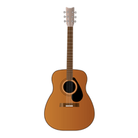
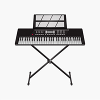
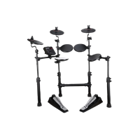
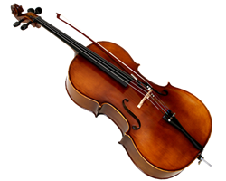

Instrumentos Disponibles

Guitarra Acústica
Una guitarra acústica perfecta para iniciar el aprendizaje musical. Ideal para todas las edades.
Precio mensual: $120,000 COP
Adquirir

Piano Digital
Piano digital con 88 teclas, excelente para el aprendizaje y la práctica en casa.
Precio mensual: $150,000 COP
Adquirir

Batería Electrónica
Batería electrónica con diferentes sonidos, ideal para los jóvenes músicos.
Precio mensual: $140,000 COP
Adquirir

Violonchelo
Violonchelo de tamaño completo, perfecto para quienes desean explorar el mundo de las cuerdas.
Precio mensual: $130,000 COP
Adquirir